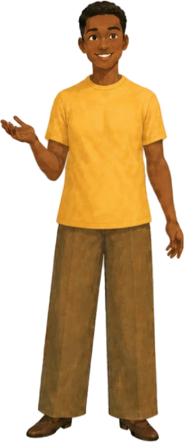

L’IA à l’école primaire
Un parcours en ligne pour te préparer à enseigner l’intelligence artificielle en 4–6P, à ton rythme. Pas besoin d’être informaticien·ne.
Tes guides : Anne, Claudia, Léo et Tomas, des enseignant·e·s comme toi.


Comment ça marche
Choisis
Au moins trois questions sur l’IA, dans l’ordre que tu veux. C’est ton parcours.
Comprends
Pour chaque question : une vidéo ou un texte, puis un petit test pour faire le point.
Enseigne
Des activités prêtes pour ta classe, avec le guide et les fiches à imprimer.
Chaque question a deux côtés
Ce que tu veux comprendre, et ce que tu veux pour tes élèves. Survole une question pour voir où elle mène.Sous chaque question, tu vois où elle mène pour tes élèves.
Pour toi
Je veux comprendre…
- Quels sont les fondements de l’IA ?Avec Anne · ≈ 45 min→ pour tes élèves : découvrent ce qu’est une machine
- Comment fonctionne l’IA générative ?Avec Claudia · ≈ 45 min→ pour tes élèves : comprennent comment elle fonctionne
- Quand utilise-t-on l’IA ?Avec Léo · ≈ 45 min→ pour tes élèves : portent un regard critique sur l’IA
- Qu’est-ce que les données ?Avec Tomas · bientôt→ pour tes élèves : comprennent comment l’IA utilise les données
- Comment concevons-nous l’IA ?bientôt→ pour tes élèves : comprennent que les algorithmes ne sont pas neutres
- Quelles sont nos responsabilités ?bientôt→ pour tes élèves : comprennent que les algorithmes ne sont pas neutres
- Quel est le coût de l’IA ?bientôt→ pour tes élèves : sachent que l’IA consomme des ressources
- Comment interagissent les humains et les machines ?bientôt→ pour tes élèves : à préciser
Pour tes élèves
Je veux que mes élèves…
- découvrent ce qu’est une machine
- comprennent comment elle fonctionne
- comprennent comment l’IA utilise les données
- sachent que l’IA consomme des ressources
- comprennent que les algorithmes ne sont pas neutres
- portent un regard critique sur l’IA
Pour des élèves de 7 à 10 ans. Les activités se font sans écran, en classe.
Préparer, c’est déjà apprendre
Pour tes élèves : des activités sans écran pour découvrir l’IA en jouant.
Pour toi : en les préparant, tu comprends ce qu’est l’IA et comment tes élèves vont y réfléchir.
Courtes
Environ 45 minutes par question, en petites étapes.
À ton rythme
En ligne, quand tu veux. Ton parcours est gardé dans ce navigateur.
Pour ta classe
Des activités clés en main, avec le guide à imprimer.
Le projet
DEEP IA est conçu avec des enseignant·e·s et accompagné d’une recherche sur la manière dont les enseignant·e·s se préparent à enseigner l’IA.